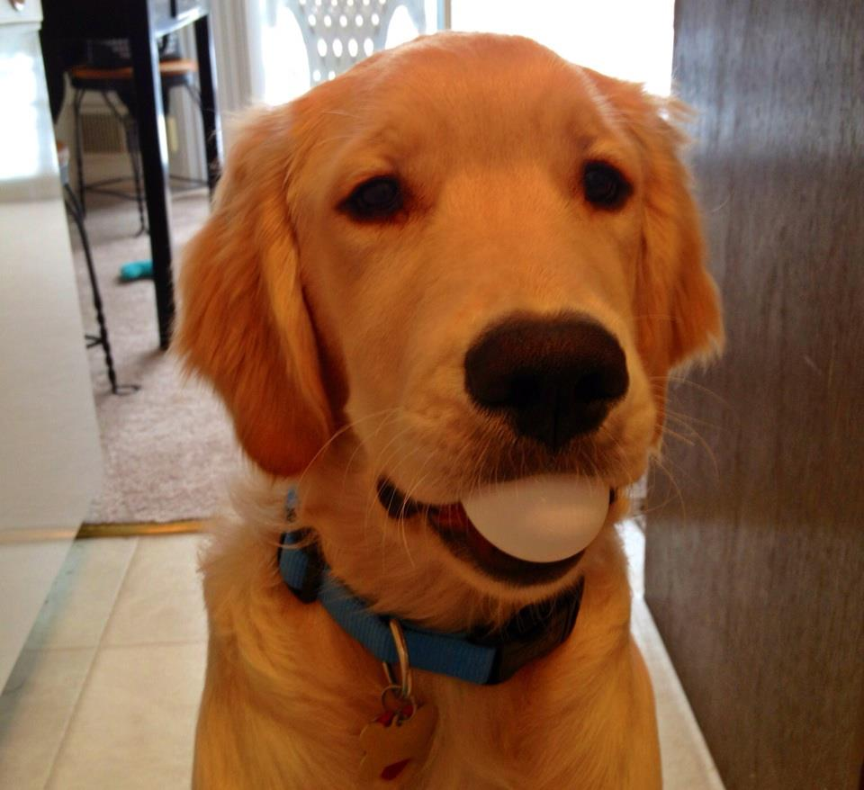

Labrador Retrievers
Labrador retrievers have been a popular dog for everything from retrieving game for hunters (hence retriever), to guide dogs for the visually impaired and service dogs for those with cognitive or physical disabilities. The trusted retriever is also popular as a government agency dog, often used as a screening and detecting assistance.
Subtypes of Labrador Retrievers
Primarily, the majority of differences between the Engish Retriever and American Retriever are behavioral, however they do experience some differences in appearances.
- English Labs
- Easily trainable
- More popularly kept as pets or hunting companions
- Usually have the more traditional "block-headed" appearance
- American Labs
- More energetic
- Bred to compete in competitive fields
- Better suited for professional companionship
- Have a tendency to be long-legged and leaner
- Yellow Labs
- Originated as a butterscotch-yellow coat
- Due to an obession with the lighter yellow, most Yellow Labs today are a lighter yellow or cream color
- Chocolate Labs
- Their genetic history can be traced to eight original bloodlines
Appearance
According to the American Kennel Club, the standards of being labeled a Labrador Retriever are:
- Size
- Characteristically labradors are medium to large dogs
- The standard guidelines are that the dog should be as long from the withers to the base of the tail as long as they are from the floor to the withers
- Coat
- The coat should be short and dense, but not wiry
- The coat is water resistant
- Acceptable shades are black, yellow, and chocolate
- Head
- The head should be broad with mildly pronounced eyebrows
- Eyes should be kind and expressive, in either brown or hazel
- Lining around eyes should be black
- Ears should be set slightly above the eyes and hang close to the head
- Jaws
- The jaws should be relatively strong
- The muzzle should be medium length and at most slightly tapered
- The jaw should have a slight hand and curve back gracefully
- Body
- The body should be strong and have a muscular build
Temperament
Another prominent characteristic of labrador retrievers is their temperament, which tends to be kind, pleasant and outgoing. They instinctively enjoy holding object in their mouths, which they can do with impressive gentleness.

Find more information below!
Labrador Retrievers
Return Home